Files & Directories
Quick recap before we start
The previous notes (The Linux File System Structure and the navigation commands) covered these ideas in detail. Here is the short version:
File
A named container of data: text, configuration, a log or a program. In Linux, “everything is a file”.
Directory
A folder that groups related files. Directories nest inside each other to form a tree.
Path
The address of a file or folder. Absolute starts at /; relative starts from where you are now.
| Command | Answers the question |
|---|---|
pwd | Where am I? |
ls | What is here? |
cd | Take me somewhere else. |
ls -l | Show details (size, owner, date). |
ls -a | Show hidden files too (names starting with .). |
pwd, ls and cd.touch · creating files
Program location: /usr/bin/touch. Imagine starting a new project that needs these files:
project/
├── README.md
├── notes.txt
├── config.txt
└── script.shYou could open an editor and save each one. Linux gives you a faster way: touch creates an empty file directly from the terminal.
touch README.mdThis creates the file immediately.
touch filename
touch notes.txt # touch = command, notes.txt = file nameCreating files
First check where you are:
pwd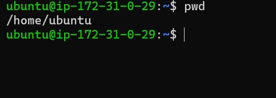
/home/ubuntu.Create one file, then check it is there:
touch file.txt # instantly creates an empty file named file.txt here
ls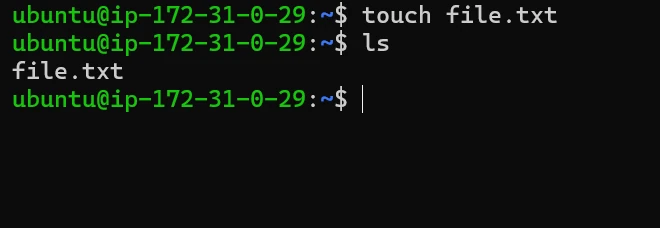
ls now lists file.txt.How do you know the file is empty?
ls -l file.txt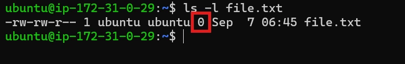
Look at the 0. That column is the file size in bytes, so 0 means the file currently contains no data.
touch does not write content
Running touch file.txt creates the file, but it does not put any text inside it.
Many files at once
touch app.txt config.txt notes.txt
ls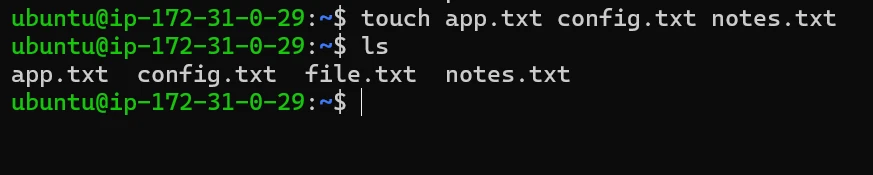
file.txt.All three files are created together in a single command, much faster than running touch three separate times.
A file inside another directory
Suppose you have /home/ubuntu/students and want to create /home/ubuntu/students/notes.txt. You can first enter the directory, then create the file:
cd students
touch notes.txt
# or, without moving:
touch students/notes.txt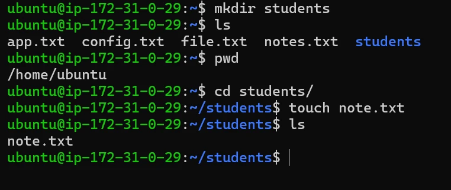
~/students after cd, and the new file is created there (the demo names it note.txt).What if the file already exists?
Suppose file.txt already contains Hello Linux, and you run touch file.txt again. touch does not erase the content: the file still contains Hello Linux. Instead, it updates the file’s timestamps to the current time.
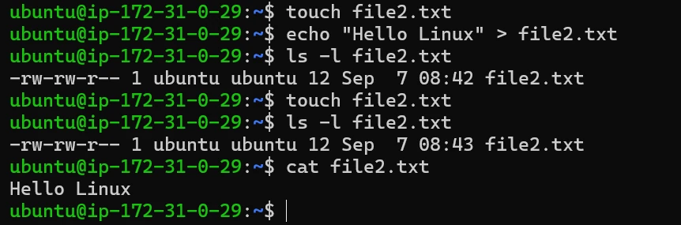
touch. Only the time changed, from 08:42 to 08:43.touch keeps the content and only updates the timestamps.touch was built to “touch” a file, i.e. refresh its access and modification times. Creating the file when it doesn’t exist is a side effect that turned out to be very handy.mkdir · creating directories
Full form: make directory. Program location: /bin/mkdir. Files need organisation. Picture 500 of these in one place:
notes.txt image.jpg app.py data.csv resume.pdf config.txt ...Finding anything becomes painful. Instead we organise them into folders:
project/
├── documents/
├── scripts/
├── data/
└── images/Linux uses the mkdir command to create directories.
Creating a directory
mkdir projectThis creates a single new folder named project inside your current location.
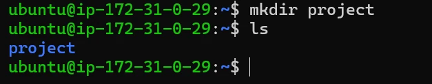
ls.Creating multiple directories
mkdir docs images backupJust like touch, mkdir can create several folders in one go: three separate, empty directories appear side by side after this single command.
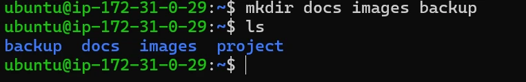
backup, docs and images join project.Creating nested directories
mkdir project/srcThis creates a src folder inside project, but only works if project already exists. If it doesn’t exist yet, Linux refuses and shows an error, because it won’t guess whether you meant to create the parent folder too:
mkdir: cannot create directory 'project/src': No such file or directory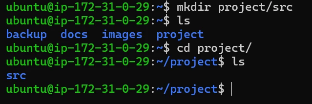
project already existed, so src was created inside it.Creating parent directories automatically
Suppose you want to create project2/src2/main, but none of these directories exist. Use -p:
mkdir -p project2/src2/mainThe -p (parents) option tells Linux: create the required parent directories as well. It also stays quiet if the folder already exists.
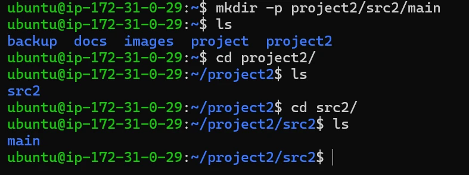
cd and ls shows each level was built.Verify with a recursive listing
ls -R project2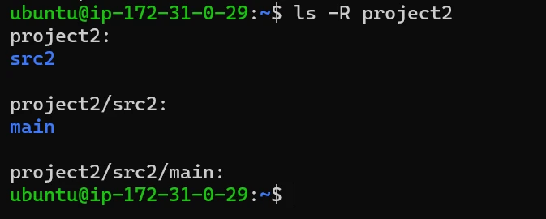
-R walks every level; main is empty, so nothing is listed under it.cp · copying files
Full form: copy. Program location: /bin/cp. Before editing report.txt, you want a backup:
cp report.txt report_backup.txtNow there are two files. The original report.txt is untouched, and a new copy report_backup.txt exists next to it.
cp SOURCE DESTINATION
# SOURCE = what you want to copy
# DESTINATION = where the copy goes / what to call itFor example: cp notes.txt backup.txt.
Practical example
Let’s create a simple file first:
touch file1.txt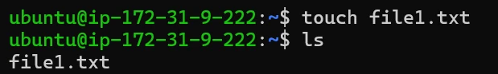
file1.txt.Now add some content to it using >, and check the content:
echo "This is my first file" > file1.txt # > writes text into the file
cat file1.txt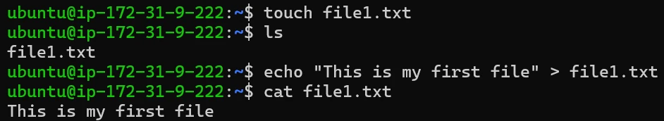
file1.txt, then cat file1.txt prints This is my first file" width="942" height="172">Now we have a file with actual content, so let’s copy it and check:
cp file1.txt file2.txt
ls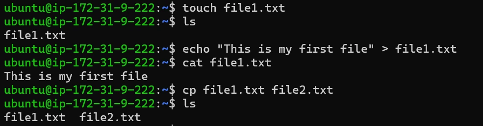
Now verify that the content was copied:
cat file2.txt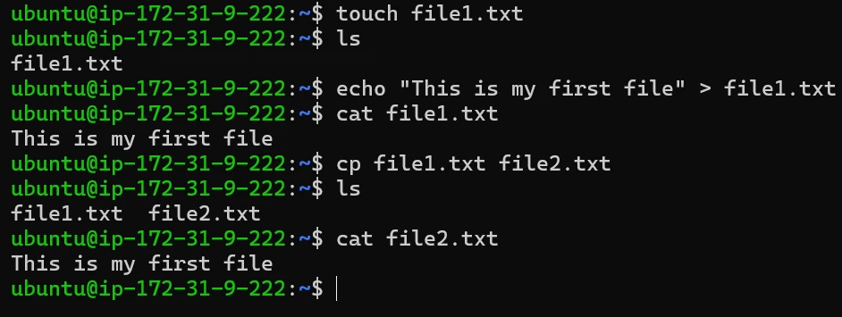
Copying a file into a directory
Suppose you have file1.txt and a documents/ folder, and you want a copy of file1.txt inside documents:
cp file1.txt documents/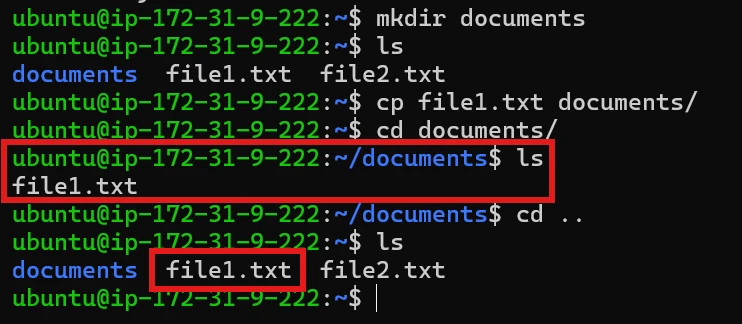
documents/, and the original is still in the home folder (both boxed).Copying and renaming at the same time
You can also give the copied file a different name:
cp file1.txt documents/report.txt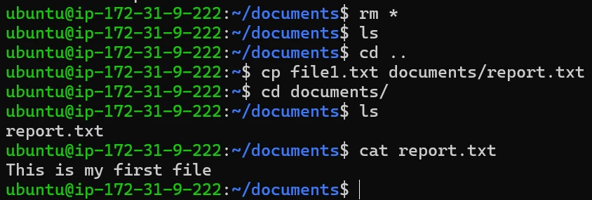
documents/ already named report.txt, with the same content.Copying multiple files
Suppose you have file1.txt, file2.txt, file3.txt and documents/, and want to copy all three files into documents.
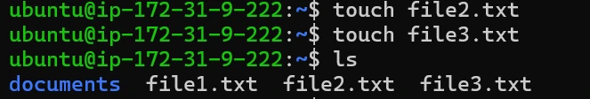
cp file1.txt file2.txt file3.txt documents/ # the last argument must be a folder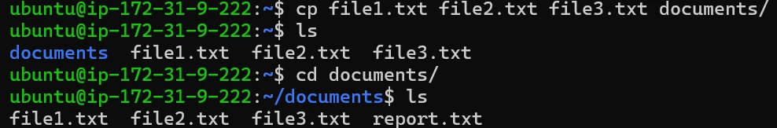
documents/ (next to the earlier report.txt), and the originals stay put.cp skips directories unless you add -r (recursive): cp -r project project_backup copies the folder and everything inside it.mv · moving and renaming
Program location: /bin/mv. mv does two jobs: move a file or directory somewhere else, and rename it. Unlike cp, it never makes a second copy.
mv physically relocates the item; after the move it is no longer at the original place.Think of it like physically taking something from one place and putting it somewhere else:
mv SOURCE DESTINATION
# SOURCE = the file or folder to move or rename
# DESTINATION = where it should end up / what it should be called# before
.
├── file1.txt
└── documents/# after: mv file1.txt documents/
.
└── documents/
└── file1.txtThe file has changed its location. There is no file1.txt in the original location anymore.
Moving files
Let’s create a file, add some content using >, and check it:
touch file1.txt
echo "This is my first file" > file1.txt
ls
cat file1.txt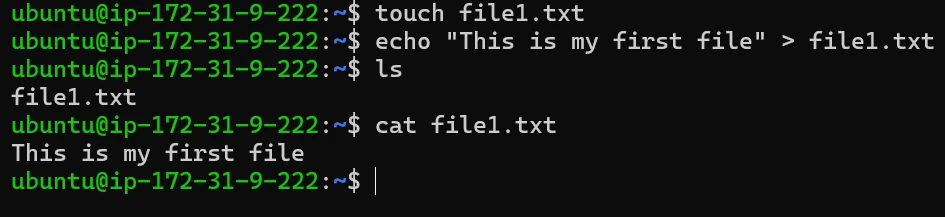
file1.txt exists and has content.Now create a directory and check the current structure:
mkdir documents
ls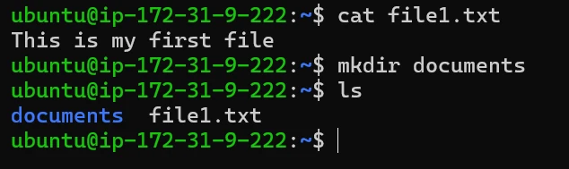
Now move the file and check the current directory:
mv file1.txt documents/
ls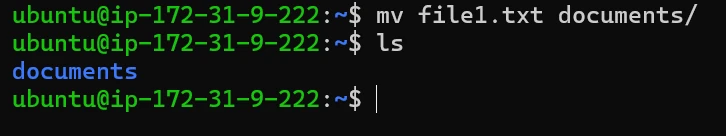
documents is left here.The file is no longer in the current directory. Check inside documents, and look at its content there too:
cd documents/
ls
cat file1.txt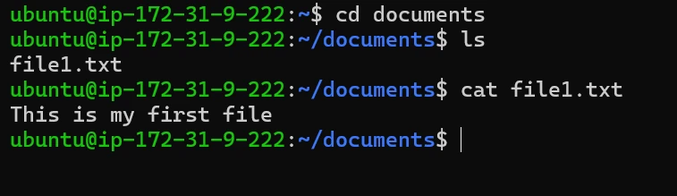
documents/.Moving a directory
mv moves whole folders too, with no extra option needed. Suppose you have:
project/
├── app.txt
└── config.txt
backup/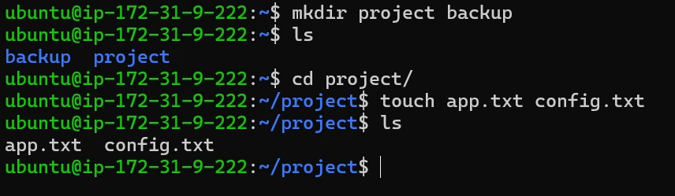
project/ with two files, plus an empty backup/.You can move project inside backup:
mv project backup/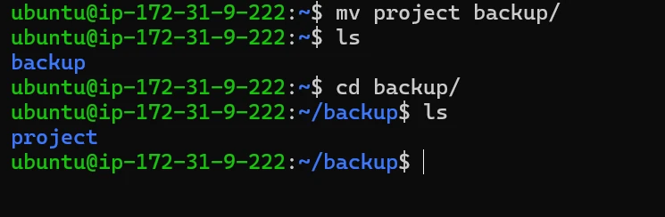
project is gone from home and now sits inside backup/.backup/
└── project/
├── app.txt
└── config.txtRenaming files
This is where mv becomes interesting. Suppose you have old_name.txt and want it to become new_name.txt:
mv old_name.txt new_name.txt
ls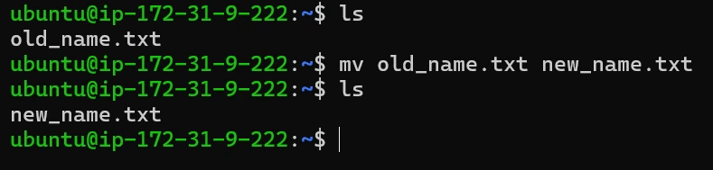
old_name.txt. After: new_name.txt.old_name.txt no longer exists; it has become new_name.txt. Same file, same content, same timestamps, just a new label.
Renaming directories
The same idea applies to folders:
mv old_project new_projectold_project and everything inside it is now called new_project. Nothing inside the folder needs to change, only the folder’s own name.
Move and rename in one step
Because mv’s destination can include both a path and a new name, you can relocate and rename a file in a single command. You have report.txt and a documents/ folder. You want it inside documents, renamed to final_report.txt:
mv report.txt documents/final_report.txt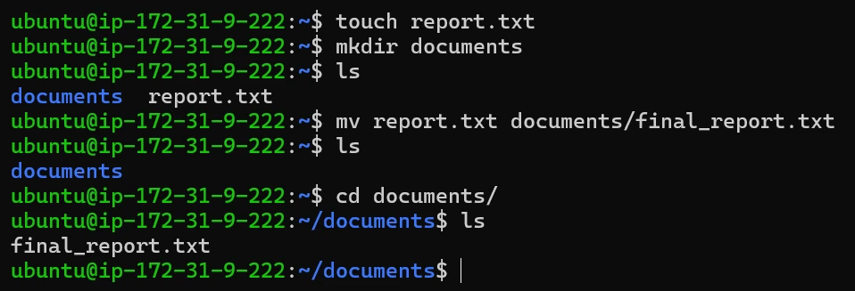
documents/ already called final_report.txt.One command does both jobs at once: the file leaves its current folder and arrives in documents already carrying its new name.
How mv reads the destination
The same command does different things depending on what already exists at the destination:
mv replaces it without asking, and there is no undo. Use mv -i to be asked first, and double-check the destination name.cp vs mv
Both use the same source → destination syntax and both can rename on the way. The difference is what happens to the original. A simple way to remember it: cp leaves two, mv leaves one.
cp duplicates; mv relocates.cp | mv | |
|---|---|---|
| Original afterwards | stays exactly where it was | no longer exists at the old location |
| Files at the end | two independent files | one file |
| Folders | needs -r | works directly |
| Typical use | backups, templates | organising, renaming |
rm · removing files
Program location: /bin/rm. rm removes files (and, with an option, directories).
rm doesn’t. Once a file is removed with rm, it is gone; there is no built-in undo.# before
.
├── file1.txt
└── file2.txt# after: rm file1.txt
.
└── file2.txtRemoving a single file
Let’s create a file first, add some content, and check it:
touch file1.txt
echo "This file will be removed" > file1.txt
cat file1.txt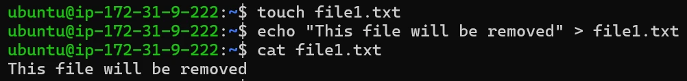
Now remove it and check:
rm file1.txt
ls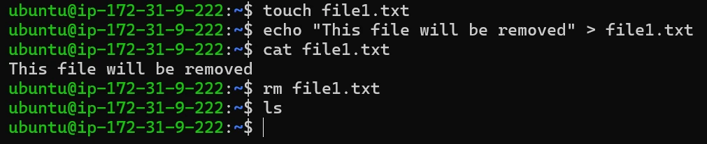
ls prints nothing: file1.txt no longer appears.file1.txt has been permanently deleted.
Removing multiple files, or a pattern
rm file1.txt file2.txt file3.txt # all three in one go
ls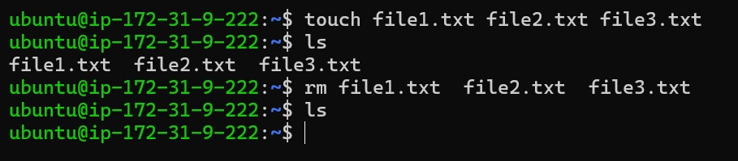
rm three separate times.Using wildcards, you can also remove files that match a pattern:
rm *.txt # every file ending in .txt in this folderThe options that change rm’s behaviour
-i · interactive
Asks before deleting each file. Type y + Enter to confirm; anything else cancels.
-f · force
Never asks and hides most errors (e.g. for missing files). Useful in scripts, where no one can answer a prompt.
-r / -R · recursive
Goes inside a directory and removes its files and subfolders, then the directory itself.
Interactive removal with -i
Because rm deletes permanently and without warning by default, it’s easy to remove the wrong file by mistake. The -i (interactive) option makes rm ask for confirmation before deleting each file:
rm -i report.txtYou may see rm: remove regular file 'report.txt'? (or regular empty file when the file is empty). Typing y and pressing Enter confirms the deletion; anything else cancels it. This small habit is one of the easiest ways to avoid an accidental, unrecoverable mistake.
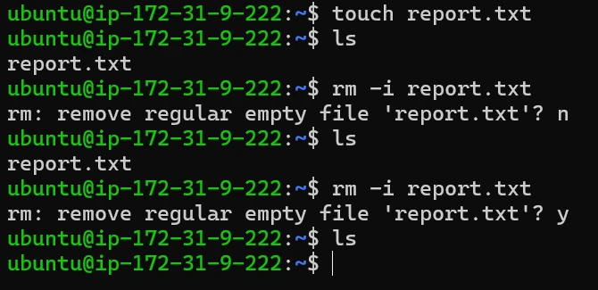
Force removal with -f
The -f (force) option does the opposite of -i: it removes files without asking for confirmation and suppresses most error messages, even for files that don’t normally prompt.
rm -f old_file.txt # no question, no complaint if it is missing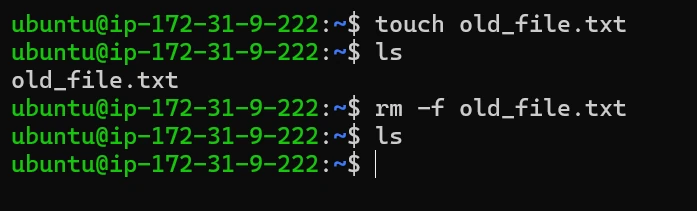
This is useful in scripts, where no one is available to answer a confirmation prompt. On the command line it also removes your last safety net, so use it deliberately, not out of habit.
Removing directories recursively with -r / -R
The -r option means recursive. Suppose you have:
project/
├── app.txt
└── images/
├── logo.png
└── photo.jpgTo remove the entire project directory:
rm -r projectLinux goes inside the directory and removes its contents and subdirectories.
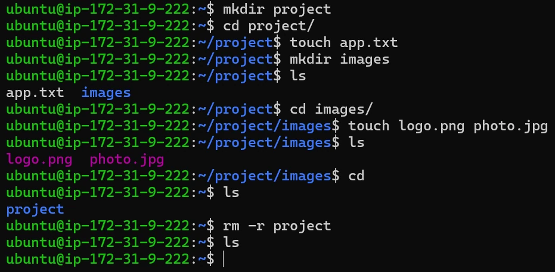
project folder, along with every file and subfolder inside it, is deleted in one command.-f for scripts and situations where you are already certain.The risk of rm -rf
Combine recursive and force and you get:
rm -rf foldernameThis deletes a folder and everything inside it without asking at any step. It is one of the most powerful and most dangerous commands in Linux:
- 1No confirmationA typo in the path is executed immediately.
- 2No recycle binThe deletion cannot be undone.
- 3One stray space changes everythingYou meant
folder/subfolder, but typed a space before the slash.
folder / is two separate things to delete.rm refuses to operate on / itself unless you add --no-preserve-root. Don’t rely on it: rm -rf folder /* would still wipe everything it is allowed to.Safe removal practices
- Preview before deleting. Run
lson the exact target first (e.g.ls *.logbeforerm *.log). - Prefer
-ifor anything important. - Avoid
-fout of habit. If unsure, run the command without-ffirst. - Be extra careful with wildcards and variables.
rm -rf *.logfrom the wrong folder matches different files; an empty variable in a script can turnrm -rf "$DIR"/*intorm -rf /*. - Keep backups of anything irreplaceable.
rmnever checks whether a copy exists elsewhere.
pwd and ls on the target, and take a quick backup (cp -r logs logs.bak or a tarball). Cleaning up disk space is a classic request, and a careless rm -rf there can end a project.rmdir · removing empty directories
Program location: /bin/rmdir. One very important rule: rmdir can remove only empty directories.
rmdir never deletes anything you forgot was inside.If a directory contains files or other directories, rmdir will not remove it.
rmdir DIRECTORY
rmdir documents # removes documents only if it is emptyRemoving an empty directory
Suppose you have temp/ and it contains nothing:
rmdir temp # temp is empty: removed, no flags needed
ls # temp is gone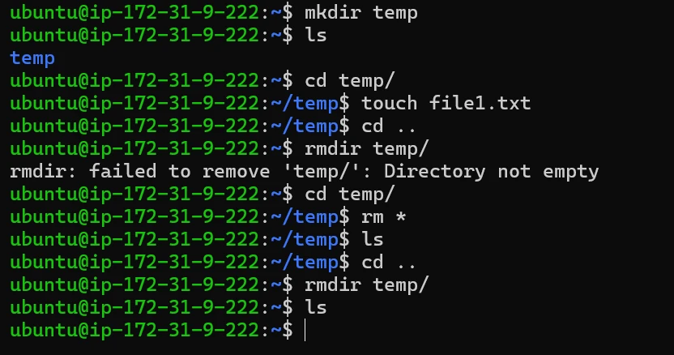
temp with rm *, rmdir removes it.Because it was empty, rmdir removed it without any extra flags or confirmation.
Removing multiple empty directories
Like mkdir, rmdir can take several directory names in a single command:
rmdir docs images backup # several empty folders at onceIf one of several folders still has something in it, rmdir removes the empty ones and reports an error only for that one; it doesn’t stop the whole command.
Why it refuses non-empty folders
project/
├── notes.txt
└── src/rmdir projectrmdir: failed to remove 'project': Directory not emptyThis is deliberate. rmdir is a safe cleanup command. To remove a directory together with its contents you need rm -r.
rmdir | rm -r | |
|---|---|---|
| Removes | only empty directories | a directory and everything inside it |
| If something is inside | refuses with an error | deletes all files and subfolders |
| Deletes plain files? | no | yes |
| Risk | safe by design | powerful and easy to misuse |
rmdir when tidying up empty folders, and keep rm -r for when you really mean to delete everything a folder contains.Key terms
- touch
- Creates an empty file if it doesn’t exist; on an existing file it only updates the timestamps and leaves the content alone.
- mkdir -p
- Creates a directory along with any missing parent directories in its path, and does not complain if it already exists.
- cp
- Copies a file to a new location or name, leaving the original in place. Needs
-rto copy directories. - mv
- Moves or renames a file or directory. No copy is made; the original location no longer holds it.
- rm
- Permanently deletes files (no Recycle Bin). With
-rit deletes directories and everything inside them. - rm -i
- Interactive removal: asks for confirmation before deleting each file.
- rm -rf
- Recursive, forced removal: deletes a directory tree with no prompts and no undo. Powerful and dangerous.
- rmdir
- Removes a directory only if it is empty; otherwise it fails with “Directory not empty”.
- Wildcard (*)
- A pattern character that matches any text in file names, e.g.
*.txtmatches every file ending in .txt. - Recursive
- Applying an operation to a directory, then to everything inside it, then everything inside those, all the way down.
Self-check
Pick an answer. You’ll see right away whether it’s correct and why.
notes.txt contains “Hello”. What does touch notes.txt do?
- Empties the file
- Creates a second file called notes.txt
- Keeps the content and updates the timestamps
- Shows an “already exists” error
On an existing file, touch only refreshes the access and modification times.
Nothing exists yet. Which command creates app/src/main in one go?
mkdir -p app/src/mainmkdir app/src/maintouch app/src/mainmkdir -r app/src/main
-p creates any missing parent directories. Without it mkdir fails because app doesn’t exist.
After mv a.txt b.txt, how many of these files exist?
- Two: a.txt and b.txt
- None
- Only a.txt
- Only b.txt
mv renames; it doesn’t copy. cp leaves two, mv leaves one.
report.txt already exists. What happens with mv draft.txt report.txt?
- mv asks before replacing it
- report.txt is silently overwritten by draft.txt
- draft.txt is moved inside report.txt
- The command fails
If the destination is an existing file, mv overwrites it without warning (unless you use -i).
rmdir project prints “Directory not empty”. How do you remove it with its contents?
rmdir -f projectrm projectrm -r projectmv project /dev
rmdir only removes empty folders. rm -r removes a directory and everything in it.
Why is rm -rf folder / so dangerous?
- The space makes
/a separate target: the whole file system - It moves the folder to the root
- It only deletes hidden files
- It asks too many questions
The shell splits on spaces, so rm receives two targets: folder and /.
Which command copies a whole directory?
cp project backupcp -r project backupmv -r project backupmkdir -p project backup
cp skips directories unless you pass -r (recursive).
What does rm -i add?
- It deletes faster
- It ignores missing files
- It deletes folders recursively
- It asks for confirmation before each deletion
-i = interactive. Only y confirms; anything else cancels.
All of it, in one sentence
touch and mkdir create, cp duplicates, mv moves or renames, and rm / rmdir delete, permanently, so always look before you remove.
Next up: Reading Files, where you’ll open these files and look inside them with cat, less and head.
— Vishwa Mohan